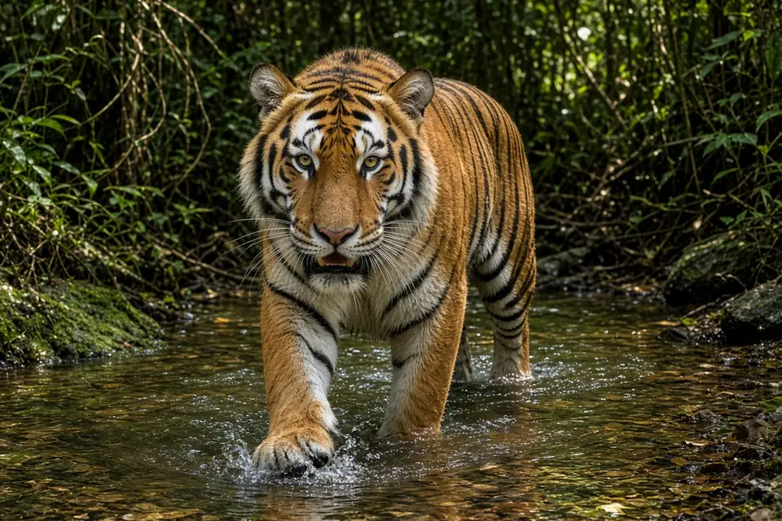

Home › Blog › What do tigers eat?
What do tigers eat? What the research on tiger diet and prey shows
Tigers eat mainly large hoofed mammals, especially deer, wild pigs and wild cattle. A review of 3,187 kills and scats covering 32 prey species found that tigers most prefer wild boar and sambar deer, and favour prey weighing about 60 to 250 kg (Hayward and colleagues, 2012). Where very large prey is common, tigers take even bigger animals such as gaur. They do not eat every day: GPS collared Amur tigers in Russia made a kill about once every 6.5 days and ate an estimated 8.9 kg of meat a day on average.
Which animals do tigers prefer?
Matt Hayward, Wlodzimierz Jedrzejewski and Bogumila Jedrzejewska pulled together published studies of tiger diet and prey availability across the species' range (Journal of Zoology, 2012). Rather than simply counting what tigers ate, they compared each prey species' share of the diet with how common it was, using a measure called Jacobs' electivity index. That separates true preference from animals that are eaten simply because they are everywhere.
Across 3,187 kills or scats of 32 prey species, two animals stood out as significantly preferred:
- Wild boar (wild pig)
- Sambar deer, a large forest deer of South and Southeast Asia
Red deer and barasingha (swamp deer) also looked likely to be preferred, but the authors noted that a larger sample would be needed to confirm it. Other common prey in tiger studies includes chital (spotted deer), gaur, hog deer and muntjac, which appear throughout the regional studies below.
Why size matters most
The single factor that explained tiger preferences in the 2012 review was prey body mass. Species weighing roughly 60 to 250 kg were preferred. That works out to a predator to preferred prey weight ratio of about 1:1, meaning tigers prefer animals around their own size, which the authors found is similar to other solitary cats. Lions, which hunt in groups, prefer heavier prey still; see what do lions eat?
Kota Ullas Karanth and Mel Sunquist found the same pull towards big prey in Nagarahole, southern India, where they studied tigers, leopards and dholes (wild dogs) between 1986 and 1990 (Journal of Animal Ecology, 1995). There, with a rich mix of large mammals at about 91 animals per square kilometre:
- Gaur, a massive wild ox, was preferred by tigers.
- Tigers selected prey weighing more than 176 kg, while leopards and dholes focused on prey of 30 to 175 kg.
- The average weight of the main prey killed was 91.5 kg for tigers, compared with 37.6 kg for leopards and 43.4 kg for dholes.
- Tigers were biased towards adult males of chital, sambar and wild pig, and towards young gaur rather than full grown adults.
The authors suggested that when large carnivores have a choice, they kill larger prey, and that this size split may help tigers, leopards and dholes live side by side. For a closer look at the leopard side of the story, see our leopard facts.

What tigers eat when big prey is scarce
Preference is not the same as what ends up on the menu. In the Karnali floodplain of Bardia National Park, Nepal, Ole Gunnar Stoen and Per Wegge studied tiger diet in the dry season from 1990 to 1994 (Mammalia, 1996). Three medium sized species, chital, wild boar and hog deer, made up more than 90% of the biomass tigers killed. Larger animals that might seem ideal for a tiger, such as nilgai and barasingha, were not eaten preferentially, probably because they were scarce. Even among the medium sized prey, tigers were selective: wild boar was preferred and muntjac was under-represented in the diet.
The same study estimated that tigers removed only about 3.1% of the available hoofed mammal biomass, a low figure compared with other studies, and found leopards pushed to the edges of the park.
How often do tigers kill, and how much do they eat?
Amur tigers in the Russian Far East live at the northern edge of the species' range and with the lowest prey densities of any tiger population. Clayton Miller and colleagues fitted GPS collars to tigers there between 2009 and 2012 and visited 380 clusters of locations where tigers had lingered, finding 111 kill sites (Journal of Mammalogy, 2013). Using a model built from those visits, they estimated that the tigers:
- Made a kill about once every 6.5 days (95% confidence interval 5.9 to 7.2 days).
- Ate an estimated average of 8.9 kg of prey a day.
That pattern of a big kill followed by days of feeding fits what is seen elsewhere: a tiger often drags a carcass into cover and returns to it, a behaviour described on our tiger facts page. The IUCN Cat Specialist Group estimates that a tiger needs around 50 to 60 large prey animals a year. Most hunting happens at night and around dawn and dusk; see are tigers nocturnal?
Why prey decides how many tigers there can be
Because tigers depend on large prey, the amount of prey sets how many tigers an area can hold. Karanth and colleagues tested this across 11 sites in India from 1995 to 2003 (PNAS, 2004). Prey densities ranged from 5.3 to 63.8 hoofed animals per square kilometre, and tiger densities from 3.2 to 16.8 tigers per 100 km², reasonably consistent with what a simple model based on prey density predicted. Prey also shapes how far tigers roam: see how big is a tiger's territory?
This is why researchers stress that protecting deer, wild pigs and wild cattle is as important as stopping poaching of tigers themselves. Miller and colleagues concluded that reversing tiger declines depends partly on conserving large hoofed mammals at adequate densities. Read more on our big cat conservation page.
Key takeaways
- Tigers mainly eat large hoofed mammals: deer, wild pigs and wild cattle.
- Wild boar and sambar deer are significantly preferred across the range, with preferred prey weighing about 60 to 250 kg (Hayward et al. 2012).
- Where gaur are available, tigers take very large prey; in Nagarahole they selected animals over 176 kg (Karanth and Sunquist 1995).
- Where big prey is scarce, medium sized chital, wild boar and hog deer can make up over 90% of what tigers kill (Stoen and Wegge 1996).
- Amur tigers killed about once every 6.5 days and ate about 8.9 kg a day (Miller et al. 2013).
- Tiger numbers track prey numbers, so prey protection is tiger protection (Karanth et al. 2004).
Frequently asked questions
What is a tiger's favourite food?
Across 32 prey species in published studies, wild boar and sambar deer were the prey tigers significantly preferred, with red deer and barasingha also likely preferred (Hayward et al. 2012).
How big are the animals tigers hunt?
Tigers prefer prey of about 60 to 250 kg, roughly their own size (Hayward et al. 2012). In Nagarahole, India, the average main prey killed by tigers weighed 91.5 kg, and tigers selected prey over 176 kg such as gaur (Karanth and Sunquist 1995).
How often do tigers eat?
Not every day. GPS collared Amur tigers in the Russian Far East made a kill about once every 6.5 days and ate an estimated 8.9 kg of prey per day on average (Miller et al. 2013).
Do tigers and leopards eat the same prey?
They overlap, but in Nagarahole, India, tigers selected prey over 176 kg while leopards and dholes focused on prey of 30 to 175 kg, which may help them coexist (Karanth and Sunquist 1995).
Why does prey matter for tiger conservation?
Tiger densities across 11 Indian sites were reasonably consistent with predictions based on prey density (Karanth et al. 2004), so losing deer, wild pigs and wild cattle means fewer tigers.
Cite this page
APA: BigCatWise. (2026, October 28). What do tigers eat?. https://bigcatwise.com/blog/what-do-tigers-eat.html
MLA: "What do tigers eat?." BigCatWise, 28 Oct. 2026, bigcatwise.com/blog/what-do-tigers-eat.html.
Chicago: BigCatWise. "What do tigers eat?." Last modified October 28, 2026. https://bigcatwise.com/blog/what-do-tigers-eat.html.
Please check the date you accessed the page and adjust to your teacher's or journal's style guide.
Sources
- Hayward, Jedrzejewski and Jedrzejewska (2012) Prey preferences of the tiger Panthera tigris, Journal of Zoology 286(3): 221-231. DOI 10.1111/j.1469-7998.2011.00871.x
- Karanth and Sunquist (1995) Prey selection by tiger, leopard and dhole in tropical forests, Journal of Animal Ecology 64(4): 439-450. DOI 10.2307/5647
- Stoen and Wegge (1996) Prey selection and prey removal by tiger (Panthera tigris) during the dry season in lowland Nepal, Mammalia 60(3). DOI 10.1515/mamm-1996-0303
- Miller, Hebblewhite, Petrunenko, Seryodkin, DeCesare, Goodrich and Miquelle (2013) Estimating Amur tiger (Panthera tigris altaica) kill rates and potential consumption rates using global positioning system collars, Journal of Mammalogy 94(4): 845-855. DOI 10.1644/12-MAMM-A-209.1
- Karanth, Nichols, Kumar, Link and Hines (2004) Tigers and their prey: predicting carnivore densities from prey abundance, PNAS 101(14): 4854-4858. DOI 10.1073/pnas.0306210101
- IUCN SSC Cat Specialist Group: Tiger
Figures are rounded summaries of the sources above. Wild populations are hard to count, so estimates change as new surveys are published.